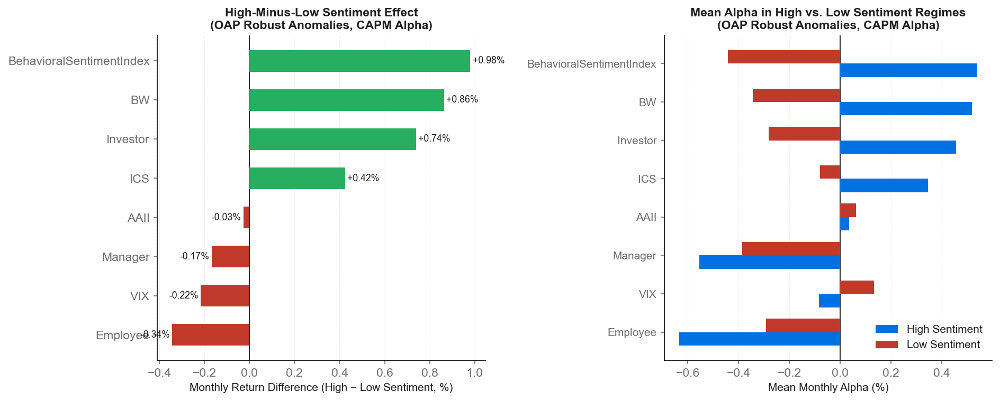

Master's Thesis · Finance & Behavioral Economics
Does investor sentiment—once purified of macroeconomic influences—explain or predict the returns of well-documented equity anomalies across global markets?
Research Question
Standard asset pricing models—CAPM, Fama-French 3- and 5-factor—leave substantial unexplained returns (alphas) across hundreds of equity anomalies. This thesis investigates whether the residual variation is driven by investor sentiment, purified of macroeconomic noise through a Newey-West HAC orthogonalization.
Seven sentiment indicators are regressed on six macroeconomic growth rates to isolate the pure behavioral component, removing business-cycle confounds.
1,147 long-short anomaly portfolios (OAP + JKP) are tested against CAPM, FF3, and FF5. Only anomalies significant across all three models are deemed "robust."
Periods are split into high and low sentiment terciles. Mean factor-model residuals and Newey-West t-statistics are compared across regimes, globally and by region.
Key Findings
The most striking results emerge for market-based sentiment proxies on portfolios that survive all three factor model corrections. The composite Behavioral Sentiment Index delivers the largest and most consistent spread.
For OAP portfolios robust across all three models, the Baker-Wurgler index yields a High-minus-Low monthly alpha difference of +0.86% under CAPM (t-stat = 3.86). The composite BSI achieves +0.98% (t-stat = 2.93).
PCA on the long sample (1978–2023) shows PC1 alone captures 56.2% of all sentiment variation. BW and Investor load similarly on PC1 (0.71 and 0.69), confirming a common market-sentiment factor.
After orthogonalization, BW and Investor remain highly correlated (r = 0.73, FDR-significant), while VIX is negatively linked to Investor (r = −0.29). Most other pairs are statistically independent, validating the use of multiple proxies.
71% of anomalies show significant alpha under CAPM; this falls to 58% under FF5. Only 18% are robust to all three models simultaneously, highlighting the importance of a multi-model robustness filter.
Manager and Employee sentiment indicators show negative High-minus-Low spreads (−0.17% to −0.51% monthly). When corporate insiders are optimistic, anomaly returns moderate—the opposite of retail/market-based sentiment effects.
The sentiment effect is stronger among OAP (Open Asset Pricing) portfolios than JKP factor themes, and more pronounced in developed markets than emerging or frontier economies.
Highlight Chart
Factor-model residuals for robust OAP anomalies are consistently higher in high-sentiment periods. Market-based proxies (BW, Investor, BSI) drive positive spreads; corporate and volatility proxies reverse the direction.

Approach
The analysis combines behavioral finance with state-of-the-art asset pricing methodology, spanning over seven decades of data and thousands of statistical tests with multiple-testing correction.
Newey-West correction (4–6 lags) throughout to handle autocorrelation and heteroskedasticity in monthly financial time series.
Benjamini-Hochberg False Discovery Rate control applied to all pairwise correlations, preventing spurious significance from multiple testing.
Results span USA, Developed, Emerging, Frontier, and World market groups using both OAP and JKP factor libraries.